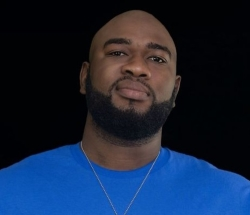
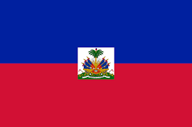

About Me
My name is Myrtho Charles but everyone calls me Tito. I was born in Pignon, and currently, I live in Petionville, Haiti. I'm currently working as an accounting administrator for Shebuco S.A while pursuing a degree in software development at BYUI. I have great love for my family, and they are the reason I push myself so hard every day.
Petionville, Haiti
Haiti is a caribbean country located on the island of Hispaniola, which it shares with the Dominican Republic to the east. Although the earthquake of 2010 left still visible traces, many points of interest from the early 19th century are still intact, for example, the citadel La Ferrière, a fortress overlooking the island, or the surrounding ruins of the Sans Souci palace, the former baroque-style royal residence of King Henri I.